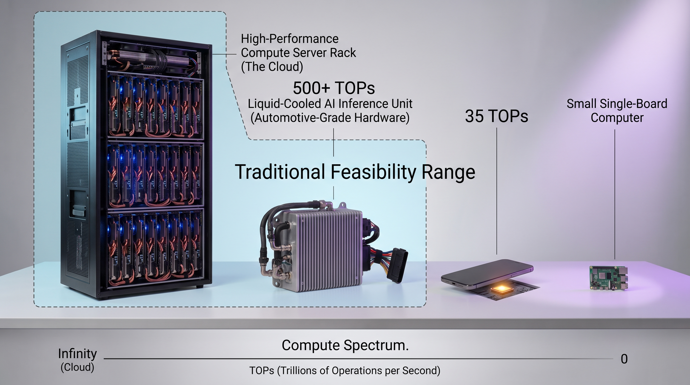

Network Dependencies: Total loss of visibility and real-time tracking when a vehicle enters a cellular dead zone.
Dumb Edge
raw, unfiltered
High-Latency Cellular Pipeline
RPM
GPS
Brake wear
Cloud Core
Overloaded
Ingestion QueuesOverloaded
Stream ProcessingLagging
Data LakesUp to 95% Noise Data
Decision Latency
BEFORE10s – minutesAFTERSub-second
Data Efficiency
BEFOREUp to 95% noise dataAFTERUp to 90% bandwidth savings
Network Risk
BEFOREVisibility lost in dead zonesAFTEROffline autonomy
Edge Intelligence for Connected Fleets04
Democratizing the Edge with Resource-Constrained Hardware
Algorithmic Efficiency over Raw Power: Utilizing highly optimized small LLMs to run complex diagnostic reasoning on sub-$100 commodity hardware. Source: Raspberry Pi 4 from $35 (raspberrypi.com); 2GB $55 (PiShop.us)
Localized Diagnostic Autonomy: The edge device acts as an intelligent gatekeeper, running real-time inference on vehicle telematics without a cloud connection.
Frictionless Fleet Scaling: Shifting to low-footprint hardware drives down hardware deployment costs compared to traditional AV computing platforms.
Commodity Edge Node (Raspberry Pi 4 Class Hardware / 4GB-8GB RAM)
Small LLM · Edge Diagnostics Model
Smart Edge
Sub-second Local Action
Filtered Anomalies Only (Up to 90% Bandwidth Savings)
Lean Cloud Core
Operations Control Center
Decision Latency
BEFORE10s – minutesAFTERSub-second
Data Efficiency
BEFOREUp to 95% noise dataAFTERUp to 90% bandwidth savings
Network Risk
BEFOREVisibility lost in dead zonesAFTEROffline autonomy
Edge Intelligence for Connected Fleets05
The 'Now' State: The High-Cost Barrier to Consumer Adoption*
The Cost Bottleneck of Luxury Hardware
Prohibitive Unit Economics: Traditional edge intelligence requires dedicated silicon, adding thousands to bill-of-materials (BOM) costs.
Ecosystem Isolation: Features are tied to the vehicle's manufacturing lifecycle, becoming obsolete within a few years.
Luxury Gatekeeping: Advanced local diagnostics and safety features remain premium options, locked away from everyday drivers.
The 'Dream' State: Mass Democratization via Handheld Hardware
BYOD (Bring Your Own Device)
$0 Incremental Cost
Running optimized small LLMs directly on consumer mobile processors (e.g., standard smartphone NPUs). The phone interfaces with the car via Bluetooth or a cheap $15 OBD-II dongle. Source: ELM327 Bluetooth adapters, ~$5–30 retail
A tiny, low-power standalone dongle powered by ultra-affordable chips (like a Raspberry Pi Zero or Pi 4 equivalent footprint) that plugs straight into the dashboard.
Test bed (stand-in for a consumer device): Raspberry Pi 4 · 4-core Arm Cortex-A72 · 8GB RAM
Impact: Modest algorithmic efficiencies remove the need for fans, heavy wiring, or high battery drain.
By shifting intelligence from custom automotive silicon to small LLMs on handheld hardware, deployment cost drops by 97%+ while making edge safety accessible to 100% of drivers.NEEDS: source
Edge Intelligence for Connected Fleets26
The Paradigm Shift & Compute Spectrum
Edge Intelligence for Connected Fleets06
The Proposed Solution – Small LLMs
Smaller LLMs deployed on the edge can solve both problems.
Algorithmic Efficiency: Shrinking model footprint rather than expanding hardware cost.
Bypassing Accelerators: Intentionally removing the GPU/NPU dependency to target ubiquitous silicon.
Traditional LLM
Small LLM
Model footprint
Large, full-precision weights
quantize
Small, dense weights
Required silicon
GPU / NPU accelerator
General-purpose CPU loop
Edge Intelligence for Connected Fleets09
Visualizing the Compute Spectrum*

"If a small LLM reasons successfully on an unassisted Pi CPU, it can run effortlessly on consumer smartphones."
Edge Intelligence for Connected Fleets*Sources: Apple A18 Pro Neural Engine, 35 TOPS (Apple); Pi 4 2GB, $55 (PiShop.us)10
set before the LLM runs; the LLM only raises, holds, or lowers it
Edge Intelligence for Connected Fleets19
What the LLM Decides: One Enrichment Card
{
"risk_synthesis":
"Heavy rain degrades traction, the cargo is a
liquid chemical tanker, and the driver is 20
minutes behind under schedule pressure. All
three are risk multipliers.",
"escalation": "raise", // LLM decision"truck_id": "truck-47",
"baseline_severity": "medium", // from co-processor"severity": "high", // medium + raise"recommended_action": "Escalate for driver/dispatcher review.",
"eta_impact": 7.2// minutes
}
medium →
high
the LLM raised it
final severity high, so this card goes over cellular to the control center
Edge Intelligence for Connected Fleets20
The LLM Decides What Crosses the Cellular Link
Uplink rule: only cards with a final severity of high go over cellular to the control center. Everything else is logged on the truck.
NEEDS: the demo recording. No source provides it yet.
Edge Intelligence for Connected Fleets24
Conclusions & Next Steps
Edge Intelligence for Connected Fleets23
Conclusion – Feasibility Validated
Architecture Proven
Confirming small LLMs can run logic loops natively on general-purpose CPUs.
Bandwidth Slashed
Two gates, the co-processor then the LLM, drop most ambient sensor readings at the vehicle boundary before anything uses the cellular link.
Inferred from the gate design; not yet measured.
Democratic Blueprint
Unlocking real-time vehicle diagnostics on consumer smartphones and handheld plug-and-play modules.
Caveat: 1-bit LLMs specifically didn't work. Software compatibility issues blocked them on the Pi, so we substituted small quantized models that run on mainline llama.cpp.
Edge Intelligence for Connected Fleets24
But... How Well Did It Actually Perform?
Token Latency?
What happens when a commodity CPU handles massive sensor spikes?
Quantization Loss?
Did extreme quantization degrade our diagnostic accuracy?
ARM Compile Hurdles?
What engineering steps were required to run the stack on an ARM Cortex-A72?
Energy Efficiency?
How much power does each edge decision cost on a CPU-only node, compared to a GPU?
Part 2Find out in Part 2: The Greenest Token Is the One That Never Hits a GPU.